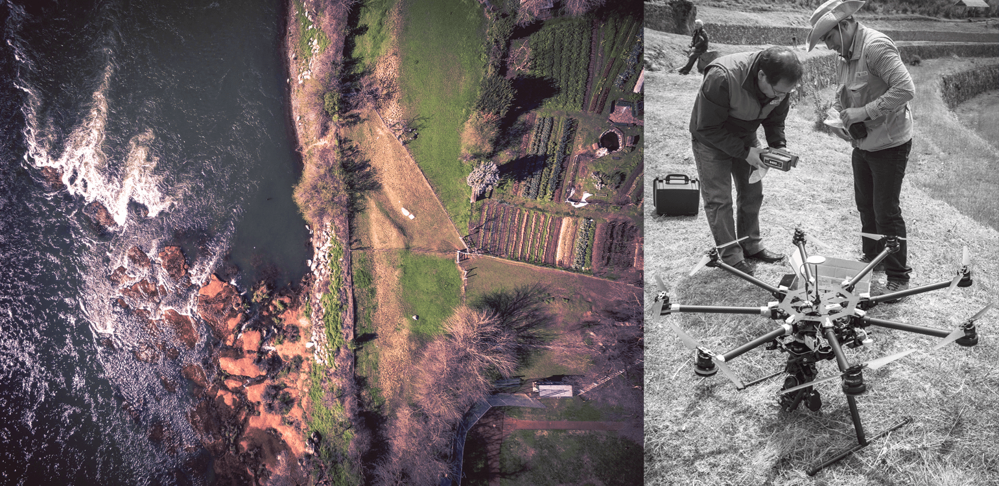

Introduction | How Do UAVs Capture Images | How Do Satellites Compared to UAVs | Advantages of UAV
Unmanned Aerial Vehicles (UAVs), also called drones, are aerial robots that can be flown below cloud level over different types of terrain to collect image and sensor data.Some UAV models resemble small multi-armed helicopters, while others resemble remote-controlled airplanes.
Development and humanitarian professionals are turning to these small, civilian scale UAVs for a host of reasons, mostly related to data collection and to program operations.
UAVs that are equipped with an autopilot and GPS functionality are capable of following pre-programmed flight paths and returning to a "home" location, with minimal input from an operator. UAVs can even be used to transport small physical objects from place to place, such as blood samples, vaccinations, and other lightweight but essential supplies.
The potential of UAVs in development work and in humanitarian aid has only just begun to be realized. This website is based on a recent WB report, UAVs State of Play for Development, and is intended as a brief overview of how UAVs work and some of the ways in which they can be put to work to further humanitarian goals.

Nadir images are taken by pointing the camera on a UAV straight down, while oblique images are taken by pointing the camera at an angle. The UAV files over the area to be imaged in a specific "lawnmower" pattern while taking images every few seconds. The pattern ensures that each image adequately overlaps with other images in the set, which is essential if they are to be processed into merged orthophotographs.
UAV images can be used on their own for analysis and communication purposes. For mapping purposes, UAV images can be processed and "stitched" together to create high-resolution orthorectified mosaics, 3D models and Digital Terrain Models(DTMs), among other useful data outputs.
Mosaics (or orthomosaics) refer to nadir images that are combined or stitched together and then geo-referenced, creating a flat, geographically accurate photograph that can be used in the same way as a traditional, drawn map. 3D models are 3D reconstructions of a surveyed area that can be manipulated and "flown" through, while DTMs are topographic models of the bare earth-otherwise known as the terrain relief.
How do Satellites compare to UAVS?
A comparison of a satellite image taken from Google Earth of a neighborhood in Dar es Salaam with an aerial image at approximately the same spatial resolution. Credit: World Bank/Drone Adventures
Remote SensingUAVs and satellites are both remote sensing platforms, used to take images of the earth from far above the ground. While they serve the same broad purpose, they differ in many ways. The first and most obvious is the altitude at which they operate: while most countries currently cap legal civilian UAV altitude at roughly 400 feet to 500 feet above the ground, satellites orbit the planet at altitudes ranging from 100 miles to 22,300 miles above the earth. This high altitude means a satellite is capable of capturing lower resolution images that cover extremely large areas, while a UAVs much lower operating altitude allows it to capture images that cover less ground at a considerably higher resolution. |
Temporal Resolution
UAVs have high temporal resolution; they can be deployed quickly and repeat their flights within minutes, provided adequate batteries and flying conditions. As satellites operate in orbit, they can revisit a given location no more than once every 24 hours. While UAVs are able to operate beneath the cloud level in otherwise calm weather conditions, satellite imagery can be blocked by cloud cover, increasing the time to obtain a useful image. Conversely, it is difficult to operate UAVs in rainy and windy conditions, whereas satellites are not affected by atmospheric-level weather. |
ExpenseConsumer-level UAVs useful for surveying purposes can cost as little as $1000, along with several sets of batteries, a robust laptop and access to electricity. Costs go up when considering travel to the site, deployment team, cost of UAV purchase or rental, computing power, post-production processing, and adherence to insurance and regulatory requirements. Furthermore, cost considerations vary between one-time deployments, and ongoing monitoring projects. Looking to satellites, civilians seeking high-resolution imagery of specific areas must usually buy images from government agencies or private companies. |
Accessible Ownership
The prices of UAVs continue to drop dramatically, making them more accessible. UAVs can also be built relatively inexpensively by technology enthusiasts, using low-cost electronic components. Consumer-level quadcopters like the DJI Phantom 3 can now be purchased new for as low as $500, given the increased competition in the consumer market. When the Phantom 3 was first released in 2015, it was priced at $1,200 and up. Commercial fixed-wing platforms are still more expensive than multirotor models, but their prices will necessarily drop given that market competition is rapidly increasing. A senseFly eBee currently costs USD$15,000 - $20,000, while Little Smart Things's Cumulus One is priced around USD $20,000.
Ease of Use
UAVs are easier to use than traditional remote controlled aircraft because they require less manual control, and thus less training. Most modern consumer UAVs have multiple fail-safe mechanisms, and these safety-focused features have matured over several iterations. Technology that provides UAVs with "sense and avoid" capabilities is improving quickly: UAV-maker DJI's new Phantom 4 ships with collision-avoidance sensors, and has a "follow me" mode that allows the to automatically follow the pilot's movements. These technologies are still under development and remain imperfect, but they are a sign of what is to come in the consumer industry.
Precision
UAVs can capture imagery at far higher spatial resolutions (e.g., sub-centimeter) and temporal resolutions (minutes and hours) than commercial satellites can - the best available resolution from a satellite at the time of writing is approximately 30 centimeters, once every 24 to 72 hours. Temporal resolution refers to the frequency at which an area can be imaged.
The higher an image's spatial resolution, the more one can see and detect in the imagery. A recent study focused on disaster damage assessments showed that an analyst could detect 8 times more damaged buildings at a UAV-enabled resolution of 15 cm, than they could in a satellite-enabled image with a 41 cm resolution.
Rapid Deployment & Results
When trained UAV pilots are available, UAVs can be deployed in a matter of minutes or hours, and the resulting imagery processed into useful data outputs within hours. In contrast, it can still take several days simply to task and acquire satellite imagery, or to find an aerial photographer in a manned aircraft on short notice.
Clouds
UAVs can fly under the cloud canopy, whereas most satellites cannot see through clouds. Cloud cover is a particular problem in areas that are more humid, making UAVs the most practical way to collect images.
Cargo
UAVs can transport essential medicines, vaccines, blood and blood samples. Field testing is currently underway in Malawi and Rwanda, with related efforts in Papua New Guinea, Peru, Tanzania and the Philippines slated for late 2016 and 2017. These field tests are primarily focused on the transportation of medical-related payloads.